Our Team's latest accomplishments

Achievements
- Inter-School
- Intra-School
-
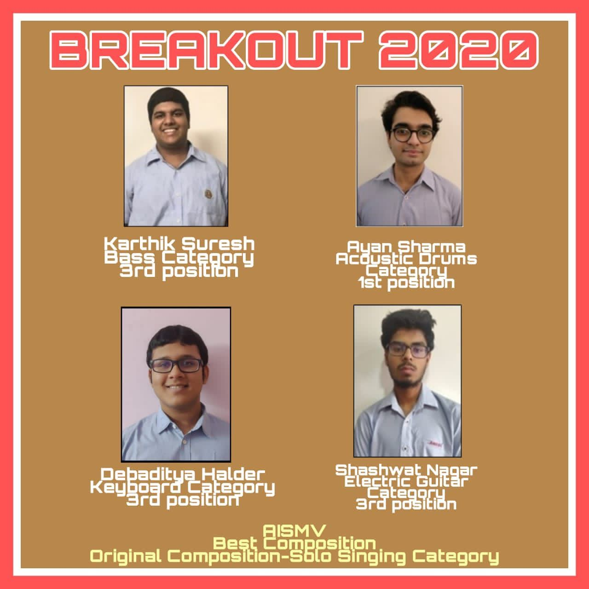 BREAKOUT
At the virtual edition of Breakout, the Western music Competition organised by AIS Saket, the aspiring musicians of AISMV made the school proud as they secured various prizes. Ayan Sharma secured the first position in the Drums Category followed by Karthik Suresh, Debaditya Halder and Shashwat Nagar securing the third position in the bass, keyboard and electric guitar category respectively. Last but not the least, AISMV also bagged the award for Best Composition in the Solo Singing category
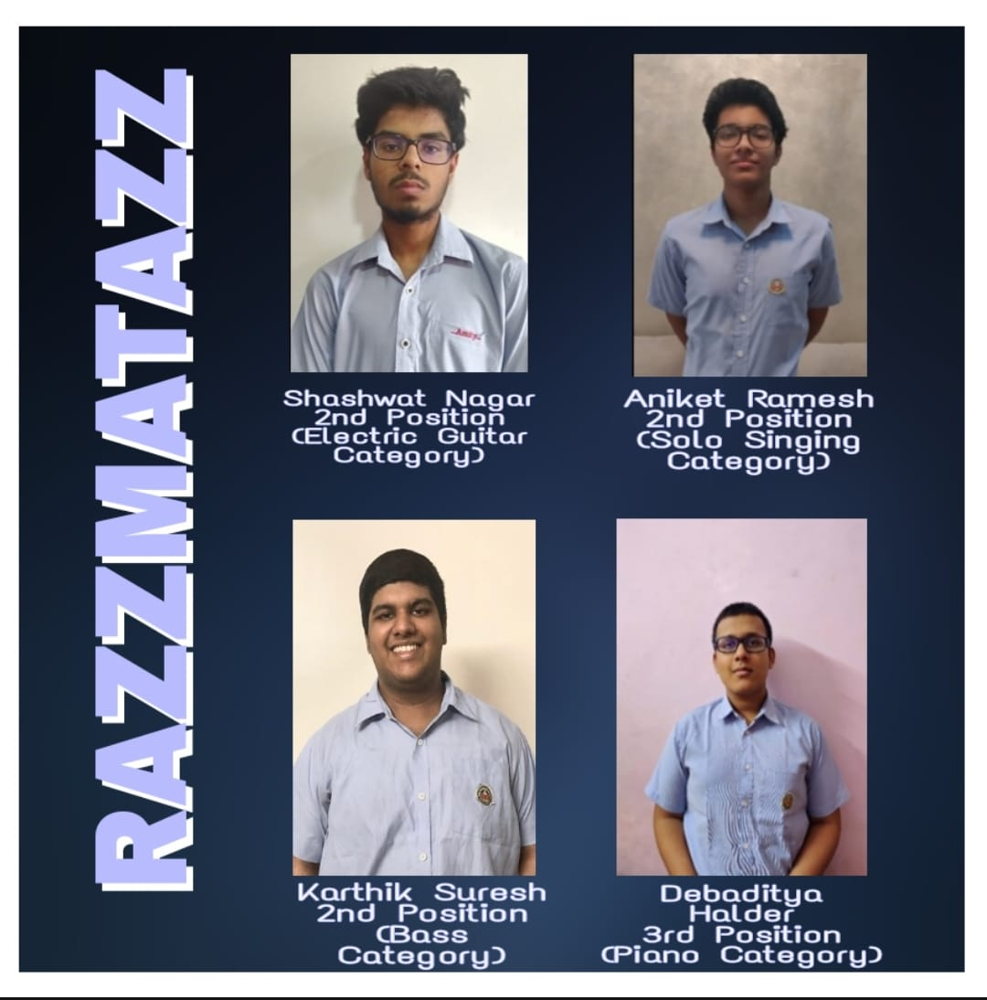 RAZZMATAZZ
Aniket Ramesh, Shashwat Nagar, Karthik Suresh and Debaditya Halder won laurels for the school at the virtual edition of Razzmatazz, organised by AIS Pushp Vihar and added yet another feather to Crescendo's hat of achievements.
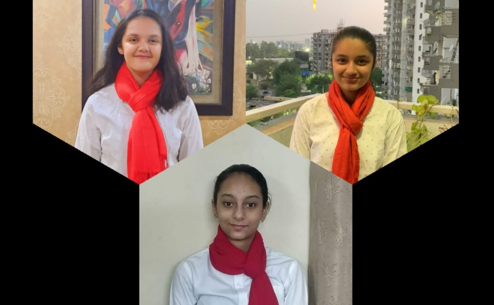 RUSSIAN CENTRE OF SCIENCE AND CULTURE
Ananya Sharma, Mannat Bhalla and Simran Joshi secured the first position amongst 50 other entries received from all over the country in the Online National Russian Singing Competition organised by RCSC in lieu of the 75th anniversary of the victory of the Soviet people in the great patriotic war. They performed the famous Russian war song 'den pobedy'.
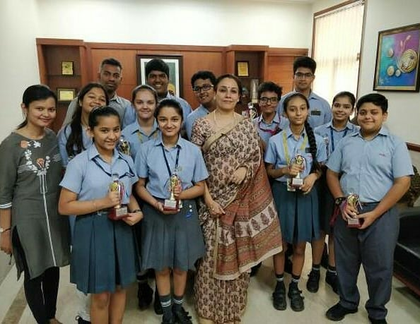 DYNAMICS
Students of the western music society participated in Dynamics held at DPS RK Puram on the 27th and 28th of April 2019. Our school band secured the 3rd position and choir secured the 2nd position for their exemplary showcase of talent.

LITERATI
At Literati Fest held at AIS Gurugram 46 on 16th of August, our choir secured the 2nd position in the German song category for their proficiency in both-fluency of language and techniques involved in singing.
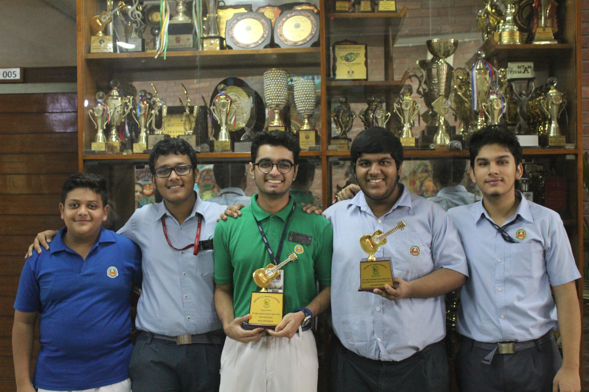 BRO. BERGINS
Bro. Bergin’s Meet was organized at Mt. St. Mary’s school on the 22nd of August in which our school band secured the 2nd position.

CADENCE
At Cadence, organized by St. Columbus School on 18th of October, our school band put up an excellent performance and secured the 2nd position in the band category.
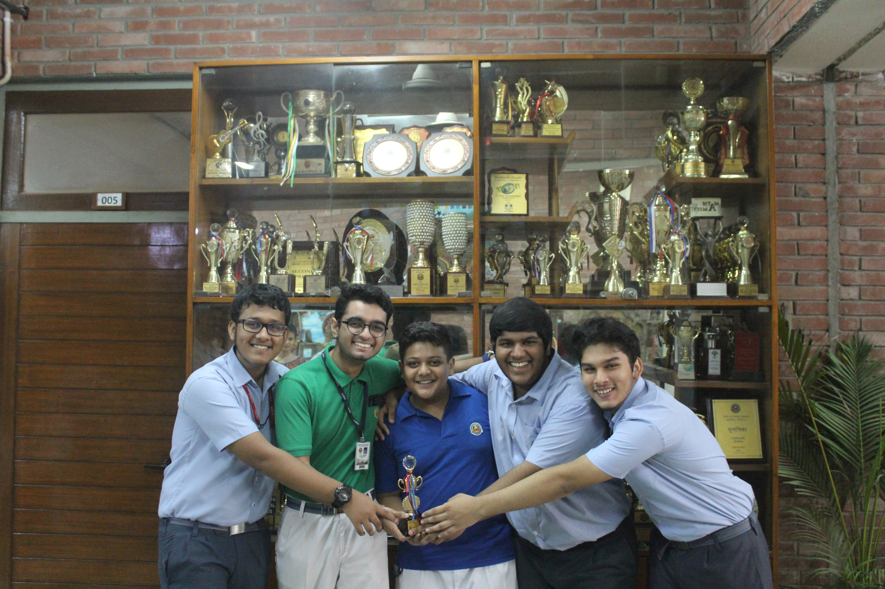 SAPTAK
At Saptak held at St. Joseph and Mary School on 22nd August 2019,our school band secured the 3rd position.
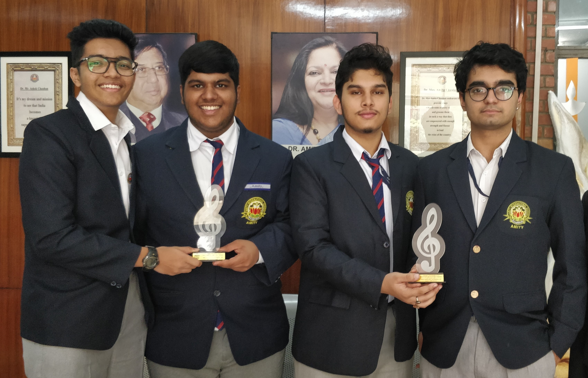 THUNDER
At Thunder held at DPS Noida school on the 8th of november, our school put up an excellent performance. They secured 3rd position.
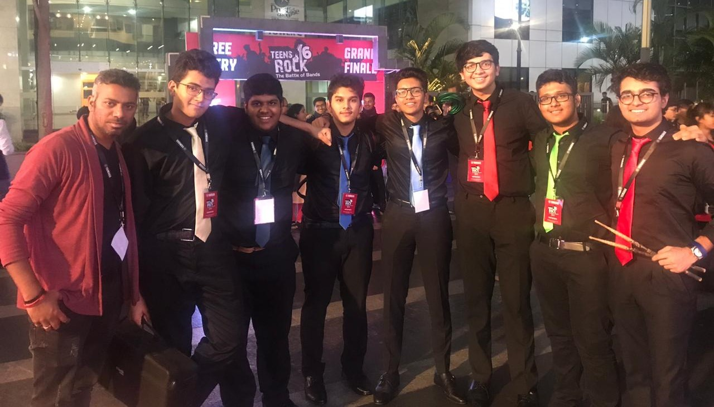 YAMAHA
School band of Ais Mayur Vihar was selected amongst 30 bands to represent Delhi at the nationals of Yamaha Teens Rock Contest: Battle Of Bands which were held in Bangalore.
INDIVIDUAL PRIZES
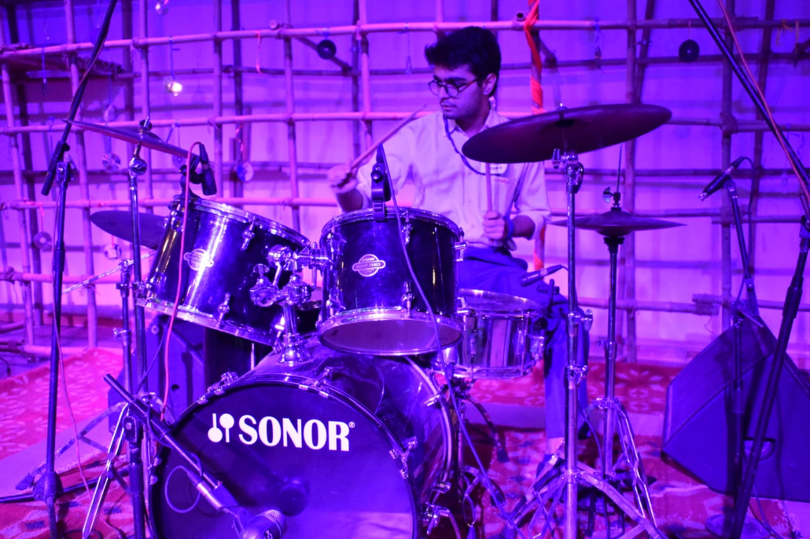 AYAN SHARMA
Best Drummer- 10 Times Ayan sharma was awarded the prize for Best Drummer in various competitions, namely- Bro Bergins Meet, Crescendo, Saptak, Breakout, Cadence and Wired held at Mt. St. Mary's, AIS Mayur Vihar, St.Joseph and Mary, AIS Saket, St.Columbus and Heritage School respectively.
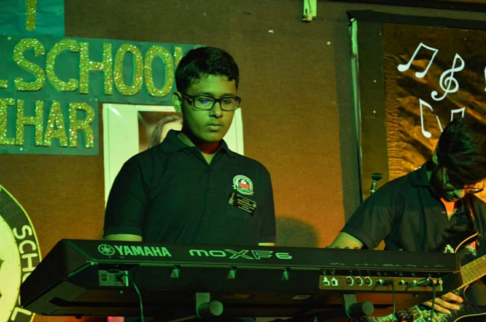 DEBADITYA HALDER
Best Keyboardist - 2 Times Debaditya Halder is a skilful pianist who secured the third position in the Piano Category at Razzmatazz'20 and Breakout'20 organised by AISPV and AIS Saket respectively.
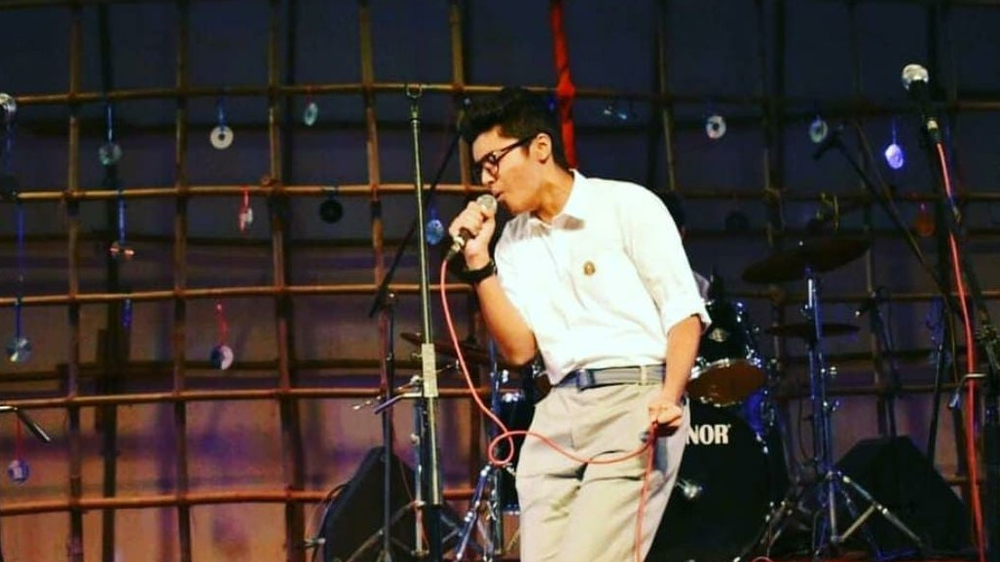 ANIKET RAMESH
Being a phenomenal vocalist, Aniket Ramesh secured the second position in the Solo Singing Category at Razzmatazz'20, organised by AISPV.
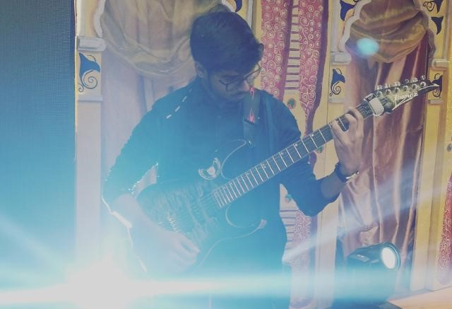 SHASHWAT NAGAR
Best Guitarist - 2 Times Shashwat Nagar, with his exceptional skills on the guitar won the 2nd position in the Electric Guitar Category at Razzmatazz'20 and Breakout'20 organised by AISPV and AIS Saket respectively.
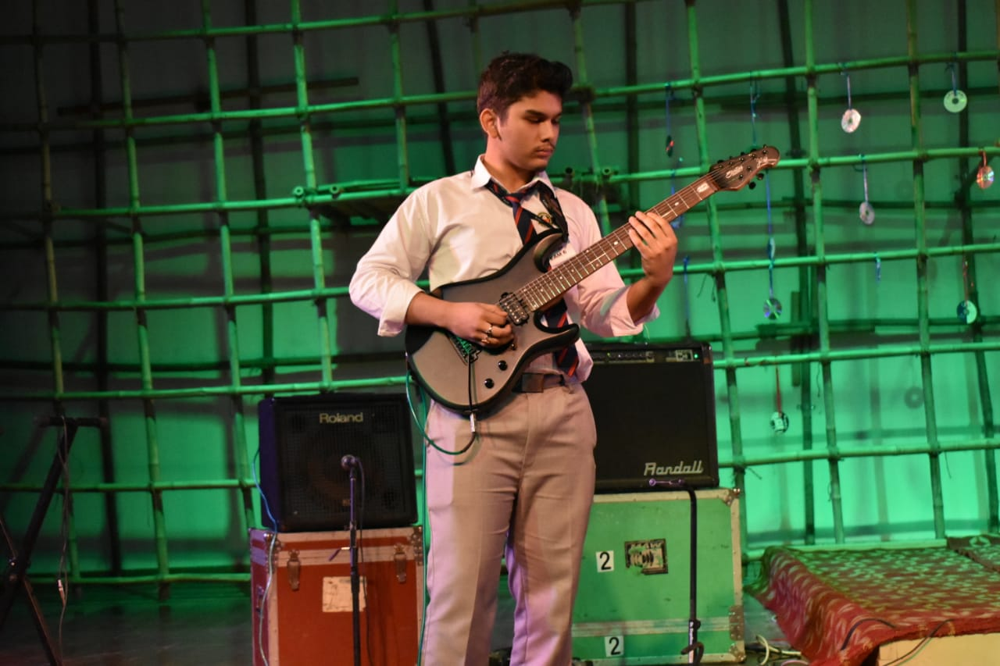 APRATIM KAKOTY
Best Guitarist- 4 Times Apratim Kakoty bagged the individual prize for the Best Guitarist at Cadence 2019, Saptak, Crescendo 2020 and Wired held at St. Columbus School, St. Joseph and Mary School, AIS Mayur Vihar and Heritage School respectively.
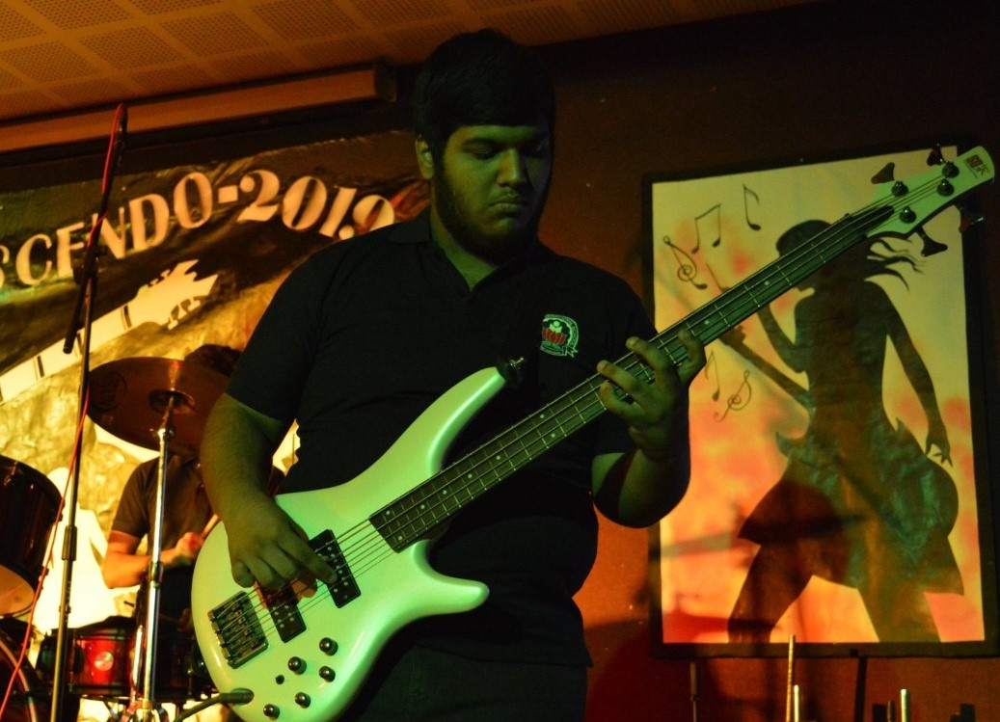 KARTHIK SURESH
Best Bassist- 5 times Karthik Suresh was awarded the prize for Best Bassist at Cadence held at St. Columbus School. He also won the award in Crescendo 2019, Crescendo 2020, Razzmatazz'20, Breakout'20 and Saptak held at AIS Mayur Vihar, AIS Pushp Vihar, AIS Saket and St. Joseph and Mary School respectively.
-
Solo Singing (6-8)
Crescendo organised Solo Singing and Instrumental Solo Competition for classes 6-8 and gave a platform to young musicians to adorn the virtual stage with their immense talent.
Member
Position
Vanya Nautiyal First - Solo Singing Gauravi Aggarwal Second - Solo Singing Aadya Varma Third - Solo Singing Niveditha Rajesh Fourth - Solo Singing Geet Verma Upcoming Singer - Solo Singing Vedaansh Mittra First - Solo Instrumental Aakash Aggarwal, Soumil Negi Third - Solo Instrumental 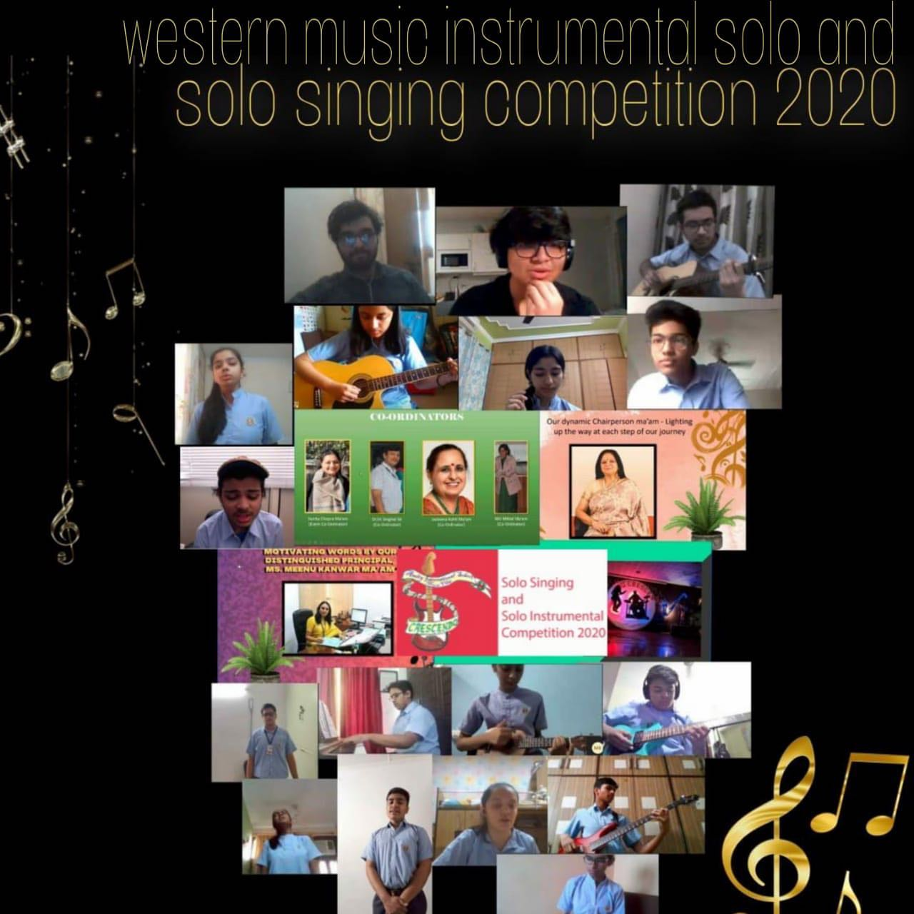 Solo Singing (9-12)
Crescendo organised it's first ever Solo Singing and Instrumental Solo Competition for classes 9-12 with zeal and enthusiasm.
Member
Position
Simran Joshi, Ananya Sharma First - Solo Singing Mannat Bhalla Second - Solo Singing Meenalika Singh Third - Solo Singing Debaditya Halder Fourth - Solo Singing Pratyush Behura Fifth - Solo Singing Debaditya Halder First - Solo Instrumental Utkarsh Garg Fifth - Solo Instrumental Ishan Kumar Consulation - Solo Instrumental Slide 3
Slide 4
Slide 5